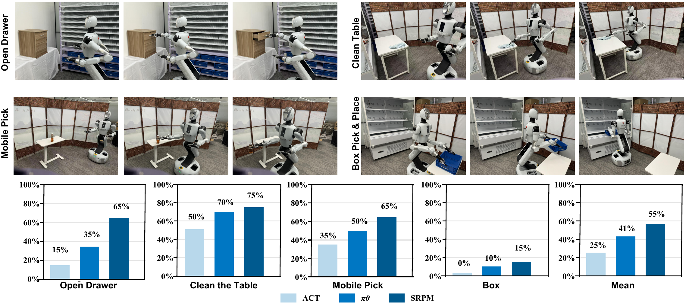
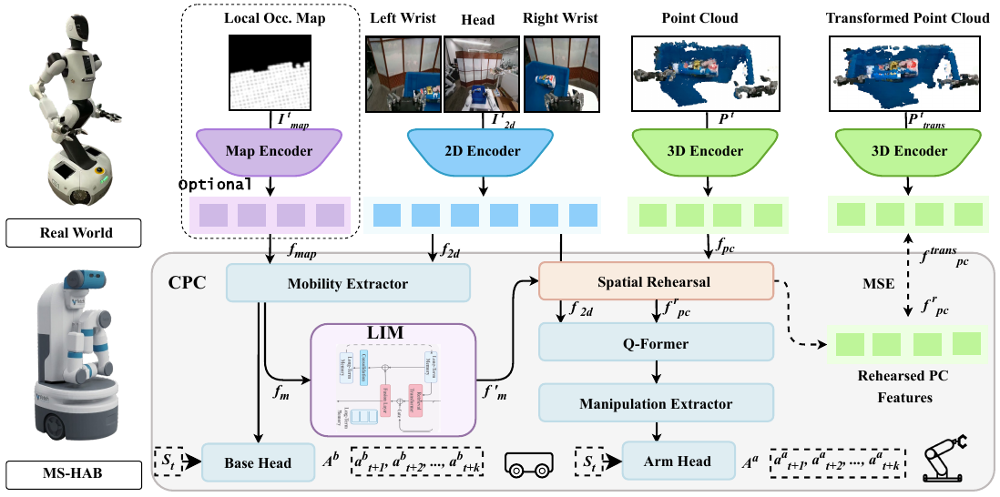
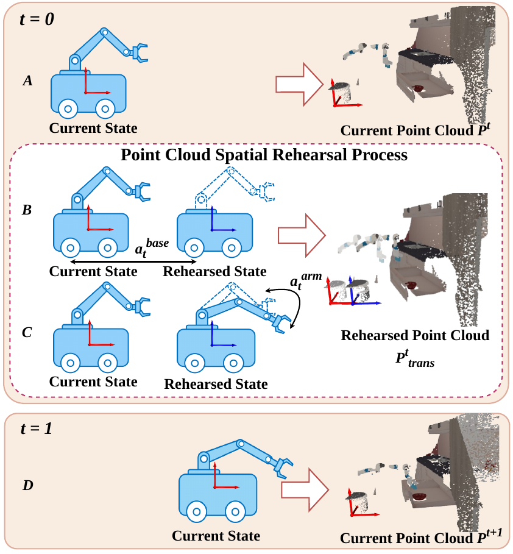
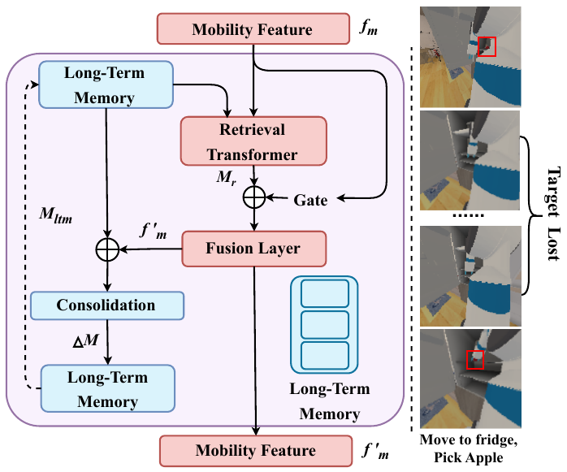
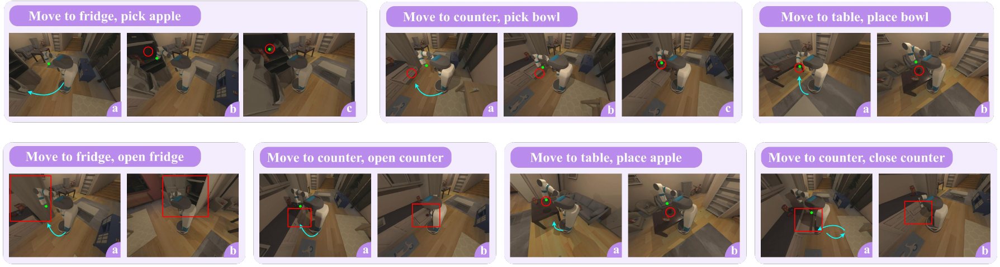
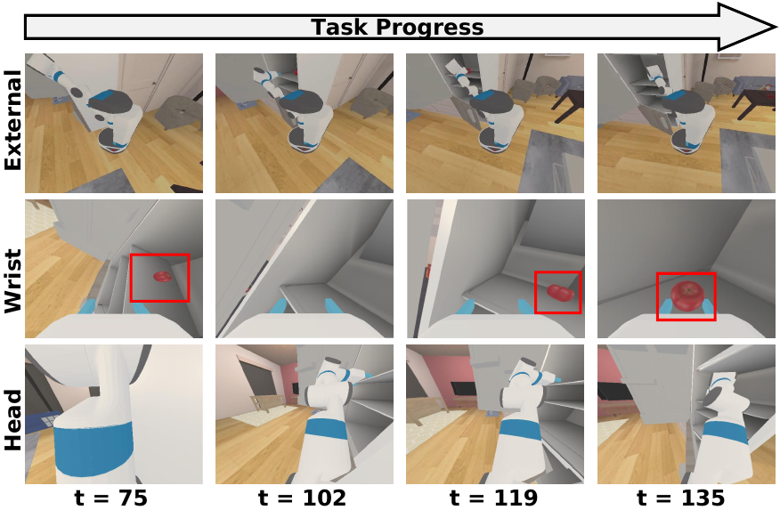

Cascaded Predictive Coordination
SRPM first predicts coarse-grained base actions and then conditions fine-grained arm actions on the latent mobility intention, making the manipulation branch aware of planned base motion.

Compared to tabletop tasks with fixed bases and cameras, mobile manipulation faces significant whole-body coordination challenges. Any mismatch between mobile base and arm movements is amplified through the robot's kinematic chain, leading to significant execution errors. Moreover, frequent viewpoint changes caused by base motion disrupt the policy's perceptual consistency, making it difficult for the robot to stay focused on the target. We propose SRPM, a latent-space Spatial Rehearsal and Persistent Memory framework for whole-body mobile manipulation. SRPM introduces Cascaded Predictive Coordination to explicitly model hierarchical base-arm dependencies, Spatial Rehearsal to anticipate base-motion-induced changes in latent 3D geometry, and Latent Intention Memory to maintain target consistency under occlusions and rapid viewpoint shifts. Extensive simulation and real-world experiments show that SRPM achieves 18.8% and 13.8% gains over state-of-the-art methods, respectively.
SRPM combines cascaded base-to-arm prediction, spatial rehearsal, and persistent latent memory for coordinated mobile manipulation.

SRPM first predicts coarse-grained base actions and then conditions fine-grained arm actions on the latent mobility intention, making the manipulation branch aware of planned base motion.
Instead of hallucinating future states, SRPM applies deterministic geometric transformations induced by base motion and aligns rehearsed point-cloud features with transformed 3D references.
Latent Intention Memory retrieves and consolidates historical mobility intentions, allowing the policy to maintain target consistency during occlusion, target loss, and large viewpoint changes.


SRPM improves mobile manipulation success in simulation and real-world experiments.

| Method | Pick Apple | Place Apple | Open Door | Pick Bowl | Place Bowl | Open Drawer | Close Drawer | Mean |
|---|---|---|---|---|---|---|---|---|
| DP | 9.0 | 57.7 | 67.2 | 20.1 | 67.7 | 27.5 | 91.0 | 48.6 |
| ACT* | 35.4 | 44.4 | 67.2 | 66.7 | 37.6 | 34.4 | 88.4 | 53.4 |
| AC-DiT | 33.3 | 33.3 | 90.7 | 36.0 | 17.0 | 81.3 | 97.3 | 55.6 |
| DSPv2* | 15.3 | 70.4 | 77.8 | 55.0 | 85.7 | 40.7 | 98.4 | 63.3 |
| SRPM | 36.5 | 80.1 | 83.6 | 65.6 | 83.1 | 84.7 | 96.8 | 75.8 |
* denotes modality-aligned baseline variants. The table shows representative rows from the paper for readability.

| Variant | Mean |
|---|---|
| Basic | 58.6 |
| Basic + 3D | 61.6 |
| Basic + 3D + CAP | 63.7 |
| Basic + 3D + CPC | 68.4 |
| Basic + 3D + CPC + LIM | 70.6 |
Supplementary real-world demonstrations for the four whole-body mobile manipulation tasks.